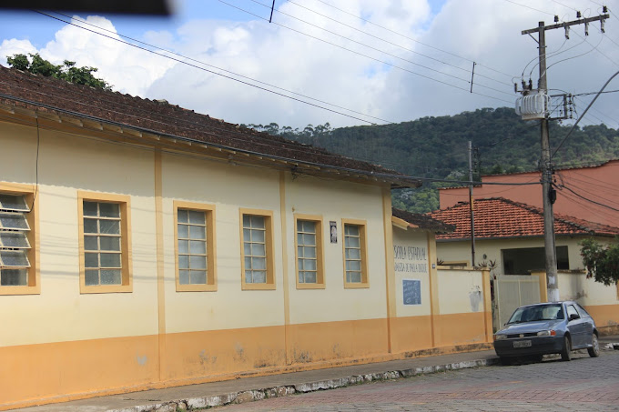

Comecei minha vida acadêmica no pré-escolar, Lígia Duque Catão, lá eu estudei dos meus 4 anos de idade até meus 7 anos de idade. Lá, fiz muitos amizades que estão comigo até hoje. Mas infelizmente não tenho muitas lembranças e nem imagens.
Partindo dali, fui para o ensino fundamental na Escola Municipal Bias Fortes, lá estudei dos meus 7 anos aos meus 11 anos de idade. Com certeza uma das melhores fases da minha vida, onde minha única preucupação era sobre o que iríamos brincar!
E de lá, fui para a última escola que estudei antes da faculdade, Escola Estadual Adalgisa de Paula Duque. As melhores lembranças da minha vida estão relacionadas a essa escola ou pessoas que convivi nela.

Aqui está o link de um vídeo para sentir um pouquinho da vibe de estudar na Adalgisa.
Não só de escola se vive o estudante, portanto, sempre corri atrás de fazer cursos em geral, principalmente o de inglês, que fiz em boa parte do tempo em que estive na escola. Portanto, no final do terceiro ano, fiz o curso do Enem, para assim fazer a prova e chegar onde estou hoje.